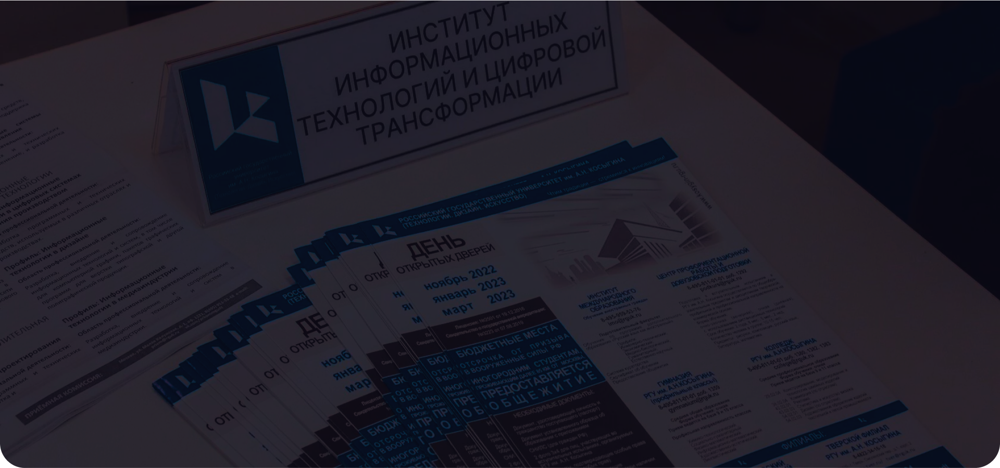

Профессии
Как поступить
Инфраструктура
Университет

Институт информационных технологий и цифровой трансформации
РГУ им. А.Н. Косыгина
ИНФОРМАЦИОННЫЕ ТЕХНОЛОГИИ И ДИЗАЙН
Программа бакалавриата 09.03.02. Информационные системы и
технологии»
ПРОГРАММИРОВАНИЕ И ИСКУССТВЕННЫЙ ИНТЕЛЛЕКТ
Программа бакалавриата 01.03.02. Прикладная математика и
информатика
Актуальные профессии по заявлению
hh.ru
Веб разработчик
Зарплата: 70000 руб. - 300000 руб.

1С-прогрммист
Зарплата: 60000 руб. - 300000 руб.

3D-моделлер
Зарплата: 30000 руб. - 255000 руб.
Администратор баз данных
Зарплата: 95000 руб. - 310000 руб.
Что нужно чтобы попасть в наш
университет
Если Вы заканчиваете 11-й класс школы, то для поступления
необходимо сдать единый государственный экзамен по:
- Русскому языку;
- Математике (профильный уровень);
- Информатике или физике.
Если Вы заканчиваете колледж, то для поступления Вам необходимо
сдать вступительные испытания уже в нашем университете (лично
или онлайн) в виде компьютерного тестирования по:
- Информатике и информационным технологиям;
- Элементам математики;
- Русскому языку.
Через портал государственных услуг или иным способом подать
заявление на поступление, указав направление подготовки:
-
09.03.02 Информационные системы и технологии, профиль
«Информационные технологии и дизайн»
-
01.03.02 Прикладная математика и информатика, профиль
"Программирование и искусственный интеллект"
Не откладывайте подачу заявления и формирование личного дела на
потом — Вы можете упустить шанс поступить в желаемый ВУЗ!
Свяжитесь с нами прямо сейчас — мы Вас проконсультируем и
неспеша начнем процесс сбора документов.
Обучение проходит на одной площадке по адресу: Москва, ул. Малая
Калужская, д. 1
В Университете создано мультимедийное учебное пространство, где
студенты могут не только успешно учиться, но и пользоваться полным
спектром удобств для самостоятельной работы.
В распоряжении студентов инновационные компьютерные классы, где
студенты имеют доступ к передовым технологиям и программному
обеспечению; библиотека
с удобными читальными залами и электронными ресурсами; современный
спортивный комплекс
с тренажерным залом и многое другое.
Инфраструктура нашего университета создана с учетом всех
потребностей современного студента, обеспечивая комфортное
и эффективное пребывание в учебном заведении.
Российский государственный университет им. А. Н. Косыгина
(Технологии. Дизайн. Искусство)
Более 100 лет раскрываем и развиваем таланты в сферах технологий,
дизайна и искусства за счет опережающей подготовки ответственных
и мотивированных профессионалов.
РГУ им. А. Н. Косыгина был основан в 1920 году и имеет богатую
историю и традиции. Более 10000 студентов получают здесь высшее
образование в 10 Институтах
В центре Москвы, рядом с метро Шаболовская. Несколько корпусов
общежитий, в шаговой доступности от учебных корпусов.
Государственная аккредитация
Выдача дипломов государственного образца и предоставление отсрочки
от армии, что подтверждается Свидетельством о государственной
аккредитации на сайте Рособрнадзора